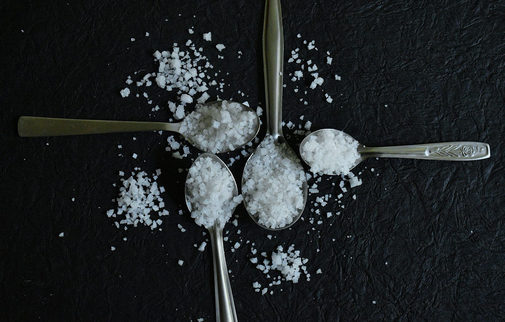

Морская соль стоит в премиальной, рустикально выглядящей упаковке на полке рядом с обычной поваренной солью по гораздо более высокой цене, и маркетинг намекает на значимое улучшение для здоровья. Реальная химия рассказывает гораздо менее драматичную историю — стоит разобраться, прежде чем платить надбавку только за упаковку.
Что на самом деле представляет собой каждая соль
Поваренная соль добывается из подземных соляных месторождений и сильно обрабатывается для удаления примесей, в результате получается почти чистый хлорид натрия, обычно с добавлением антислёживающих агентов и, в большинстве стран, добавленным йодом. Морская соль производится выпариванием морской воды, оставляя хлорид натрия вместе со следовыми количествами других минералов, естественно присутствующих в морской воде — магний, калий, кальций и другие, в зависимости от источника.
Содержание натрия: почти идентично
Это самый важный практический факт в этом сравнении: и поваренная, и морская соль примерно на 98-99% состоят из хлорида натрия по весу. Грамм на грамм они содержат практически одинаковое количество натрия. Любой, переходящий на морскую соль ради «более здорового» профиля натрия, исходит из заблуждения — содержание натрия, определяющее давление и сердечно-сосудистые риски, практически неизменно.
Маркетинговое заявление о следовых минералах
Маркетинг морской соли о пользе для здоровья строится вокруг содержания следовых минералов — магния, калия, кальция и других из морской воды, из которой она производится. Эти минералы реальны, но присутствуют в количествах, слишком малых, чтобы иметь значение с точки зрения питания. Вам пришлось бы потреблять непрактичное, вредное для здоровья количество морской соли, чтобы получить значимую дозу этих минералов по сравнению с простым употреблением фрукта, горсти орехов или порции листовой зелени.
Йод: реальная значимая разница
Здесь существует реальное отличие, хотя не в пользу морской соли с точки зрения общественного здравоохранения. Йодированная поваренная соль была специально введена в XX веке как успешная мера общественного здравоохранения для предотвращения нарушений от дефицита йода, так как пищевой йод иначе не был надёжно доступен для многих групп населения. Большая часть морской соли не йодирована. Тот, кто полностью полагается на морскую соль без других надёжных источников йода (морепродукты, молочные продукты, йодированный хлеб в некоторых странах), теоретически может иметь более высокий риск недостаточного потребления йода — реальное, хотя часто упускаемое, соображение.
Где у морской соли есть законное преимущество
Реальная разница, о которой стоит заботиться, — кулинарная, а не питательная. Более крупная, неправильная кристаллическая структура морской соли растворяется медленнее и даёт другую текстуру и вспышку вкуса при использовании как финишная соль, посыпаемая на еду перед подачей. Это настоящая причина, по которой шеф-повара предпочитают её для определённых применений — просто это не причина здоровья, и не применимо, когда соль всё равно растворяется при готовке, где кристаллическая структура полностью исчезает.
Должна ли надбавка к цене менять ваш выбор?
Учитывая почти идентичное содержание натрия и незначительный вклад минералов, платить значительную надбавку за морскую соль исключительно ради предполагаемой пользы для здоровья не хорошо подтверждается доказательствами. Если вам нравится текстура и вкусовые ощущения для финиша блюд — это законная кулинарная причина выбрать её — просто идите с ясным пониманием, что это предпочтение вкуса и текстуры, а не значимо более здоровый источник натрия.
Итог по натрию независимо от источника
Какую бы соль вы ни использовали, именно общее потребление натрия — а не источник — важно для давления и здоровья сердца. Большая часть натрия в среднем рационе приходит из переработанной еды и ресторанной пищи, а не соли, добавленной дома, что делает выбор между морской и поваренной солью относительно небольшим фактором в общем потреблении натрия для большинства людей.
Частые вопросы
В морской соли меньше натрия, чем в поваренной?
По весу обе примерно на 98-99% состоят из хлорида натрия, так что содержание натрия почти идентично на грамм, несмотря на маркетинг морской соли как более полезной.
Является ли морская соль лучшим источником минералов, чем поваренная?
Следовые минералы в морской соли (магний, калий, кальций) присутствуют в количествах, слишком малых для значимой питательной пользы по сравнению с получением этих минералов из реальных продуктов.
Почему в поваренной соли есть йод, а в морской часто нет?
Йод намеренно добавляется в поваренную соль как мера общественного здравоохранения для предотвращения йододефицита, так как он не является значимым природным компонентом ни одного из видов соли. Морская соль обычно не обогащается.
Действительно ли важна текстура морской соли?
Да, для готовки и приправы — более крупные кристаллы морской соли растворяются медленнее и могут давать вспышки вкуса и текстуры, которых не даёт мелкая поваренная соль, что является законной кулинарной причиной предпочесть её.